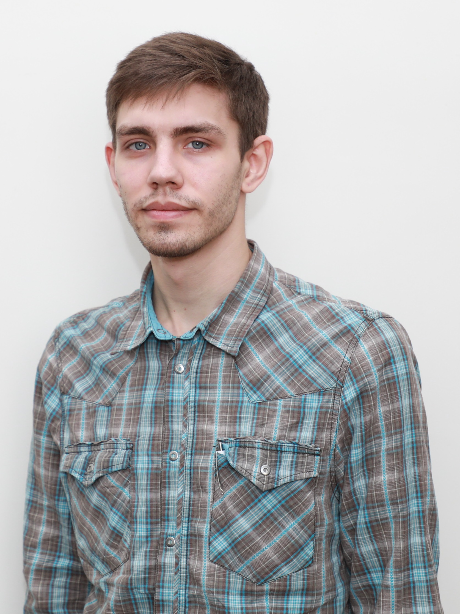

Personal

Phone: 8 800 555-35-35
LinkedIn: Sviatoslav Karachevtsev
Email: svyat.karachevcev1@gmail.com
Telegram: @Skafior
Facebook: facebook.com/Skafior
GitHub: github.com/SKarachevcev
Description might be here...
Expirience
since Nov 2018 Data Operator
SQUAD Ukraine. Creating, collecting, prepairing, modifing data sets for AI learning.
Jan 2017 - May 2017 PHP Programmer
Creating alhorithm for reversing databases from different sites to a big database.
June 2016 - Jan 2017 Service Engineer
Repair, setup and cleaning cash machines, PC and accesories (soft and hardware).
Sep 2011 - Apr 2017 Academic clerk
Academic work at the department of the university. Solving complex alhorithmic, mathematic and engineering tasks, programming. Calculation of derivatives, creating models in Solid Works/ANSYS, computer-aided design software for navigation systems.
Education
Since Oct 2021 Front-End Programmer, Beetroot Academy
Sep 2015 - Feb 2017 Programmer - System Analyst, Master's Degree (Specialist), National Technical University "Kharkiv Polytechnic Institute". Subject Area: Designing, aligning and analyzing computer systems.
Sep 2010 - June 2015 Engineer - Programmer, Bachelor's Degree, National Technical University "Kharkiv Polytechnic Institute".
Sep 2006 - July 2010 Computer Scince, IT Step
Languages
English, B1+
Russian, native
Ukrainian, native